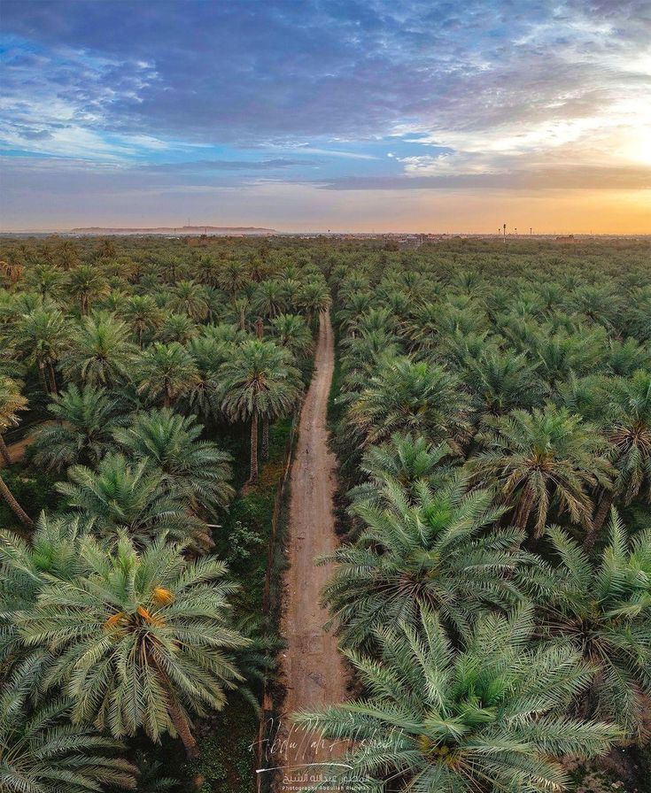
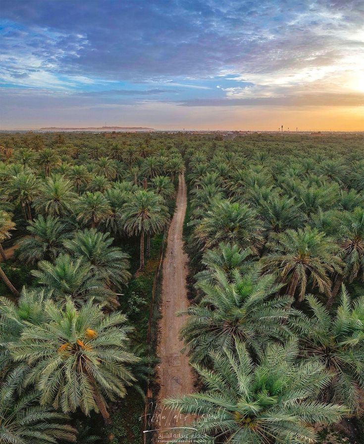
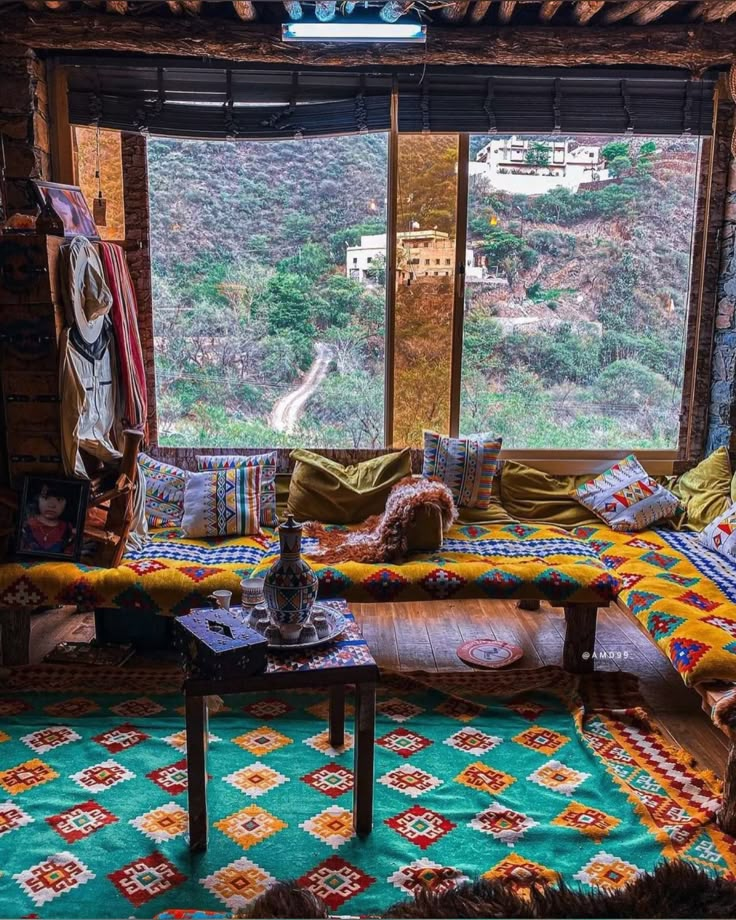
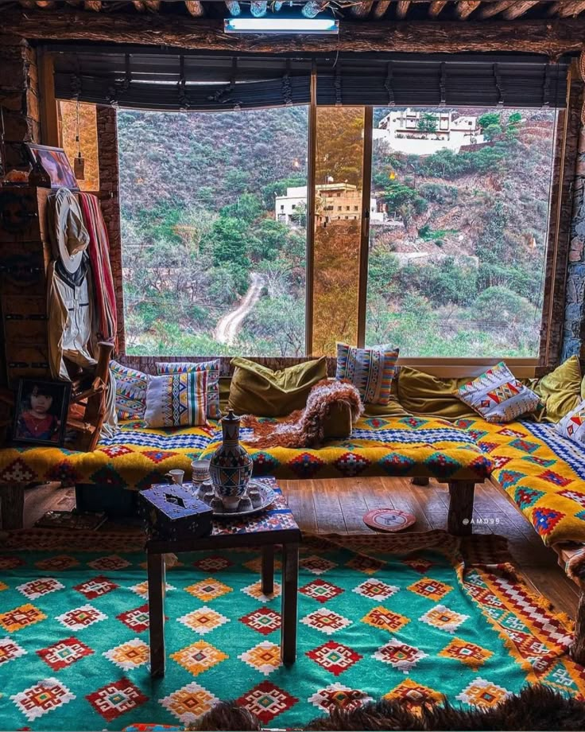
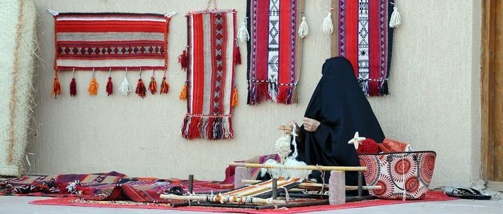
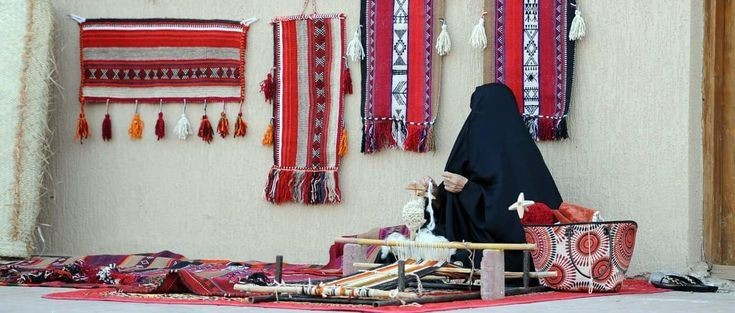

في إرث نسعى للحفاظ على التراث السعودي الأصيل وإبرازه بروحٍ حديثةٍ تجمع بين عبق الماضي وابتكار الحاضر.
يُعتبر الرقص الشعبي أحد الفنون التراثية البارزة في المملكة، حيث يتعلم الزائر خطوات العرضة بالسيوف والإيقاعات الطبلية، وكذلك "اللفـح" الذي يمثل جانباً من الفنون النسائية التقليدية للتعبير عن الفرح. يقدم المدربون شرحاً عن تاريخ هذه الرقصات ودورها في المناسبات الوطنية والإجتماعية، ثم يتيحون للمشاركين فرصة التجربة في أجواء حماسية جماعية. الفعالية لا تقدم كعرض فقط بل كتجربة تفاعلية يعيش فيها الزائر روح الاحتفال.
تعد زراعة العجوة النبوية من أبرز الأنشطة الزراعية التقليدية في المدينة المنورة، وهي تجربة أصيلة يعيش فيها الزائر أجواء المزارعين منذ حراثة الأرض وتجهيز التربة وحتى غرس فسائل النخيل والعناية بها. يتعرف المشارك على أسرار النخلة المباركة وأهمية العجوة في التراث النبوي وما ارتبط بها من روايات وأحاديث. كما يتذوق الزائر ثمار العجوة الطازجة ويشارك في مراحل بسيطة من الزراعة.
تنقل الجولة السياحية الزائر بين القرى القديمة والأسواق الشعبية والمعالم الطبيعية، حيث يتعرف على تنوع المحطات بين المزارع والجبال والوديان، ويتوقف مع المرشد السياحي عند كل محطة ليسرد قصصاً تاريخية عن المكان والعادات المرتبطة به. يشاهد الزائر المنتجات المحلية ويتذوق بعض الأكلات الشعبية، كما يعيش لحظات حية مع الحرفيين وأهل القرى. الجولة مصممة لتكون رحلة غنية تجمع بين المتعة والمعرفة والإحتكاك المباشر بالبيئة المحلية.
تمثل ورشة الحياكة نافذة على التراث اليدوي، حيث يتعرف الزائر على طرق تحويل الخيوط الصوفية والقطنية إلى زخارف هندسية مميزة تستخدم في الملابس والإكسسوارات الشعبية. يقود الورشة مدربون مختصون يشرحون خطوات الغزل والنسيج، ويتيحون للزوار فرصة التجربة بأيديهم لصناعة قطعة صغيرة كذكرى. تدمج الورشة بين المتعة التعليمية والحفاظ على التراث الحرفي العريق.
 

 

 
